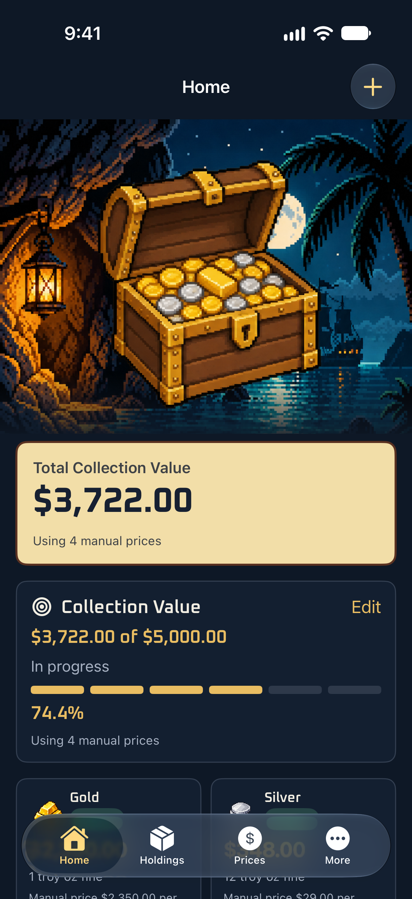
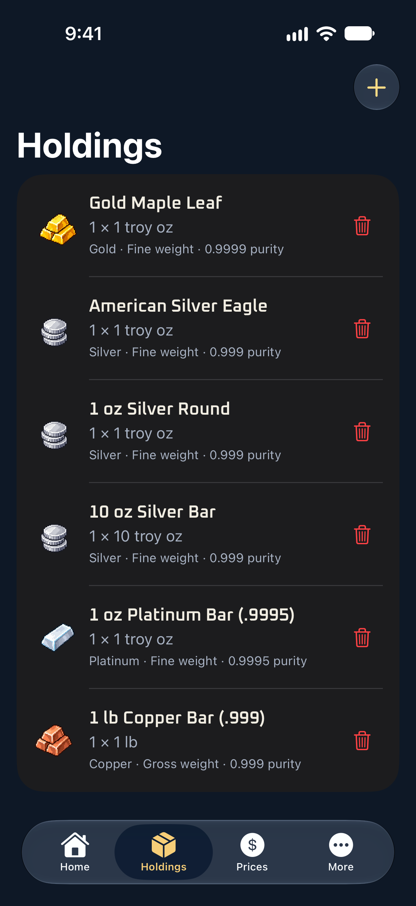
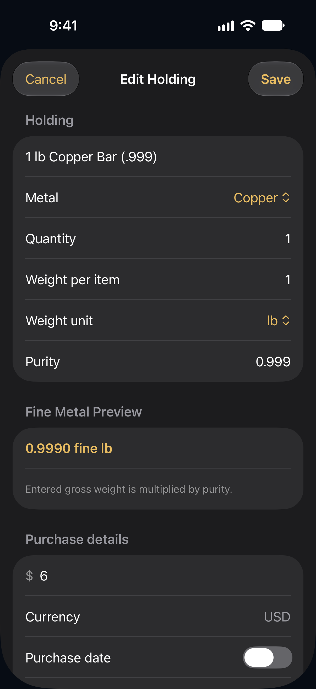
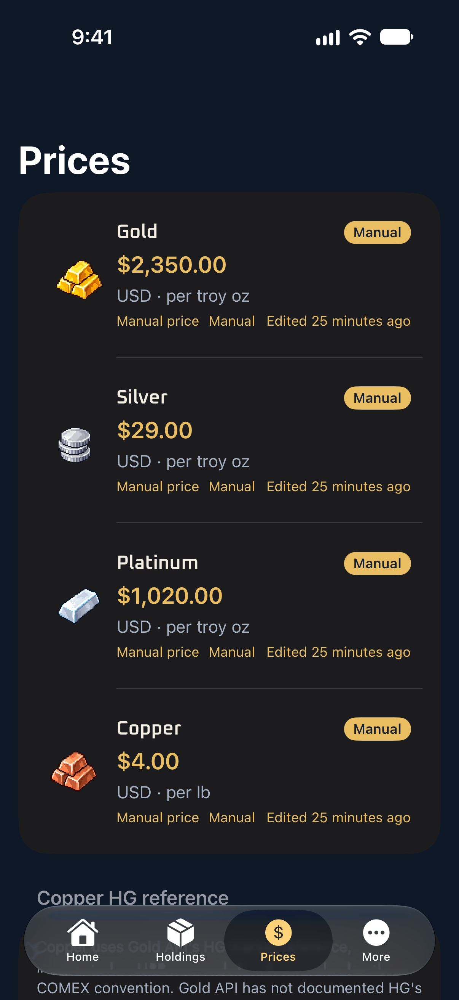
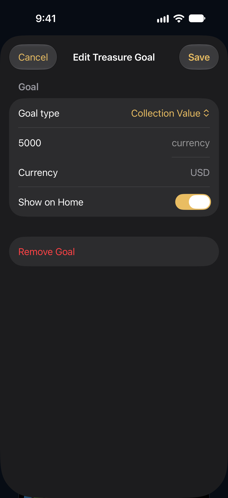
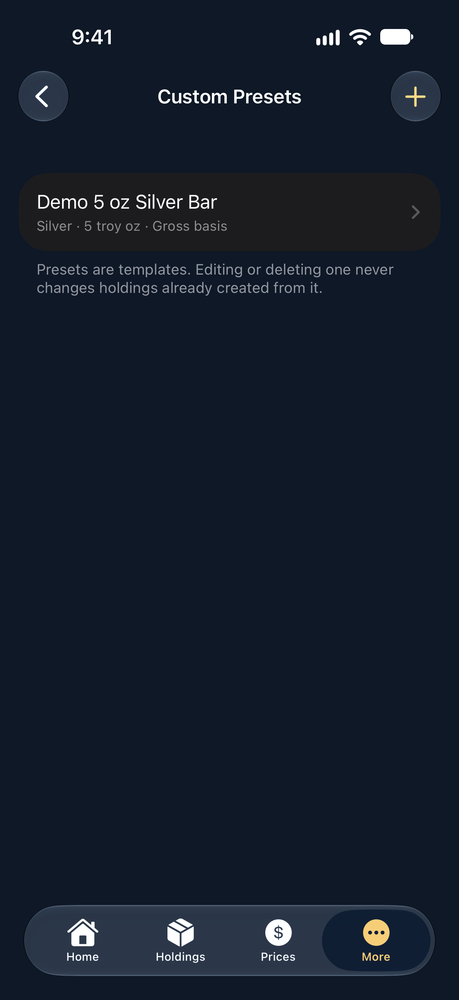
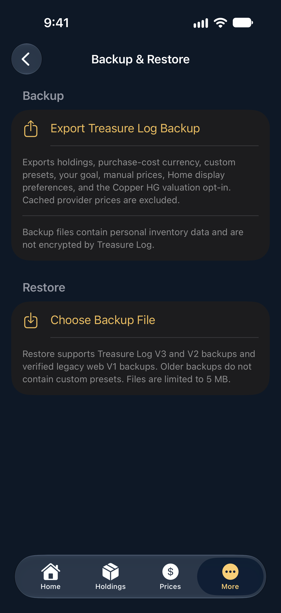

One sentence
Treasure Log gives physical precious-metal collectors a local iOS home to catalog their holdings, follow estimated metal-content values, and track collection goals.
Media resources · An Evenmatter app
A native iOS collection log for people who collect physical gold, silver, platinum, and copper.
About the screenshots: The pictured collection is fictional. Prices shown are illustrative manual demonstration values, not current live quotes. Collection values are estimates of metal content; they are not appraisals and do not include numismatic premiums.
At a glance
Gold, silver, and platinum can use available provider references or a manual override. Copper has a provisional Gold API HG reference interpreted as USD per avoirdupois pound; the provider has not verified HG’s unit or benchmark. Including HG in collection valuations is a separate opt-in, disabled by default. A manual copper price takes precedence.
Promotion: Evenmatter intends limited indie-app cross-promotions through Kickstart Exchange. These placements are not intended to generate monetary advertising revenue; production placements are not active at this time.
Editorial reference
Treasure Log gives physical precious-metal collectors a local iOS home to catalog their holdings, follow estimated metal-content values, and track collection goals.
Treasure Log is free to download and use, with no in-app purchases or subscriptions. It helps collectors organize coins, bullion bars, jewelry, and other physical gold, silver, platinum, and copper holdings. The app records quantities, weights, purity, purchase details, and notes, with built-in and custom presets, collection goals, metal-price references, and local backup and restore. Collection records are stored on the device without an account, and available references support estimated metal-content values.
Physical collections can be difficult to keep organized across product types, weights, and purchase records. Treasure Log brings those details into a native iOS inventory for collectors of gold, silver, platinum, and copper. Each holding can include a name, metal, quantity, weight basis, purity, purchase details, and notes. Built-in presets provide starting specifications for familiar bullion products, while custom presets let collectors save their own reusable templates.
The app can show available market references and manual price overrides, then use the selected reference to estimate metal-content value. These estimates are not professional appraisals, dealer offers, or numismatic valuations, and they do not account for collectible premiums. Gold API’s HG copper reference is provisionally interpreted as USD per avoirdupois pound; its physical unit and benchmark have not been verified by the provider. Copper HG is excluded from collection valuation unless the user opts in, and a manual copper override takes precedence.
Treasure Log also supports a collection goal and local backup and restore. Collection records are kept on the device without requiring an account; refreshing provider prices requires a network request. The interface pairs these practical tools with a dark, pirate-inspired pixel-art presentation. The app is free to download and use, with no in-app purchases or subscriptions. Evenmatter intends limited indie-app cross-promotions through Kickstart Exchange; these are not intended to generate monetary advertising revenue, and production placements are not active at this time.
Current app capabilities
Record coins, bars, jewelry, and other pieces with quantity, gross or fine weight, purity, purchase details, and notes.
Start with built-in product specifications or create custom templates for items you add repeatedly.
Review available gold, silver, and platinum references, use manual overrides, and see their source labels. References may be unavailable or stale.
Gold API HG is provisionally interpreted as USD per avoirdupois pound. The provider has not verified its unit or benchmark; copper valuation use is opt-in and off by default.
Set a collection-value or fine-weight goal and follow progress based on the collection and price data currently available in the app.
Export a JSON backup and restore a supported file with a preview and confirmation. Exported backup files are not encrypted by Treasure Log.
Approved editorial assets
Full-resolution native iPhone captures. Use the download link below each image for the original PNG.







Original files
Save individual approved images or download the complete package.
Download all press assets · ZIPIncludes the seven screenshots, 1024 px app icon, approved Treasure Log artwork, and an asset README.

Developer
Evenmatter is the independent developer identity behind Treasure Log. Treasure Log is a native iOS app for organizing physical precious-metal collections, with locally stored collection records, reusable presets, goals, price references, and backup and restore.
The public developer identity is Evenmatter. Individual legal identity and location are not published here.
Questions or review access
For product questions, interview requests, or review-access requests, email the developer.